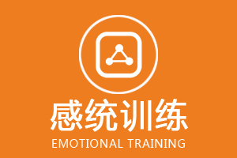
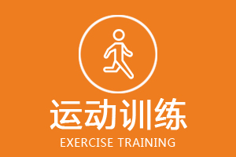
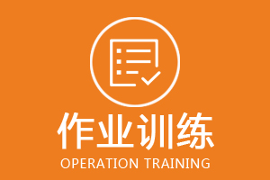
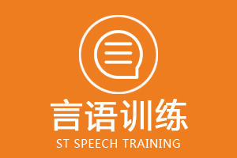
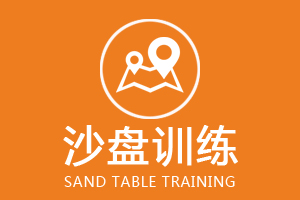
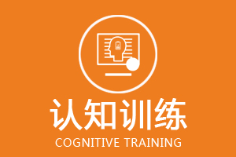
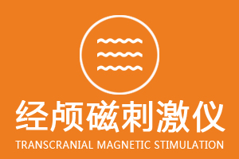
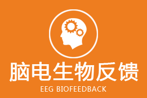
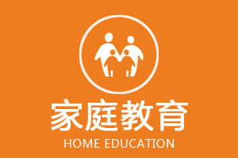
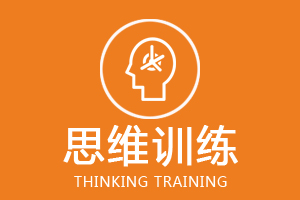

首页
适合对象
课堂设置
培训优势
教练团队
培训案例
培训资讯
关于我们
主页
>
课堂设置
>

感统训练-一路童行教育培训课程
感统训练 是指基于儿童的神经需要，引导对感觉刺激作适当反应的训练，此训练提供前庭(重力与运动......
[详情]

PT运动训练-一路童行教育培训课程
PT运动训练 是利用人体肌肉关节运动，以促进身心功能恢复和发展的一种方法。主要进行躯干、四肢的......
[详情]

OT作业训练-一路童行教育培训课程
OT作业训练 是应用有目性的、经过选择的作业活动，对由于身体上、精神上、发育上有功能障碍或残疾......
[详情]

ST言语训练-一路童行教育培训课程
ST言语训练 是针对各类言语障碍者进行训练或矫正的一种教育训练方法，主要内容是对各种言语障碍进......
[详情]

沙盘训练-一路童行教育培训课程
沙盘训练 是通过让受训者从玩具架上任意挑选玩具摆放在盛有细砂的箱子里，完成后由咨询者分析创......
[详情]

认知训练-一路童行教育培训课程
认知训练 是针对认知障碍和智力障碍的儿童进行科学的认知能力训练，并通过仪器、动画、声音等生......
[详情]

经颅磁刺激仪-一路童行教育培训课程
经颅磁刺激仪 经颅磁刺激仪是一种利用脉冲磁场作用于中枢神经，改变皮层神经细胞的膜电位，使之......
[详情]

脑电生物反馈训练仪-一路童行教育培训课程
脑电生物反馈 脑电生物反馈是借助脑电生物反馈治疗仪将大脑皮层各区的脑电活动节律反馈出来，并......
[详情]

家庭教育-一路童行教育培训课程
家庭教育 是针对儿童亲子依赖行为、家庭成员关系不良、亲子教养模式传承不良的问题进行纠正与教......
[详情]

思维训练-一路童行教育培训课程
思维训练 是针对言语能力差，记忆力差、注意力不集中、理解能力差的儿童进行头脑智能开发，以创......
[详情]
首页
1
2
下一页
末页
共
2
页
15
条
Copyright©2016 LINKGROUP All rights reserved. 一路童行教育科技有限公司@版权所有
陕ICP备18009613号